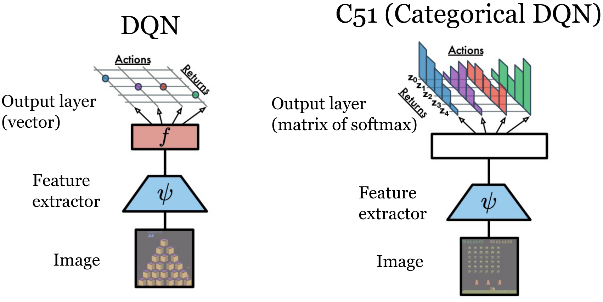
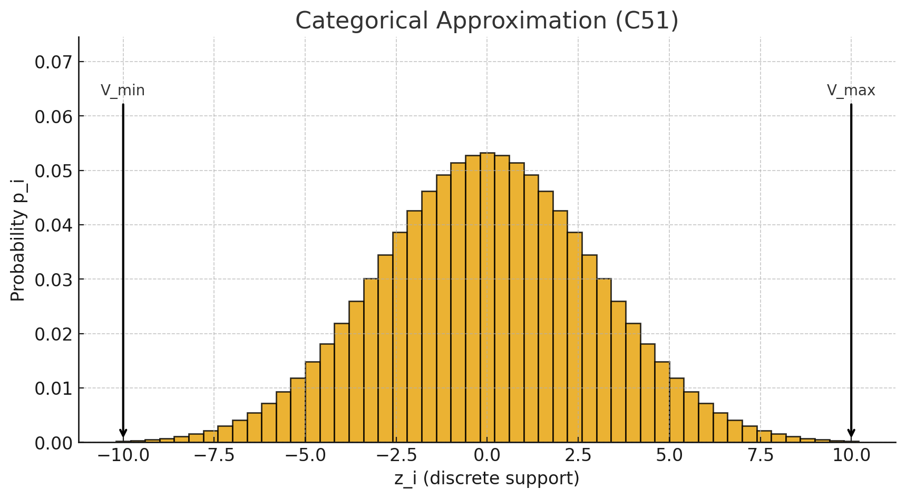
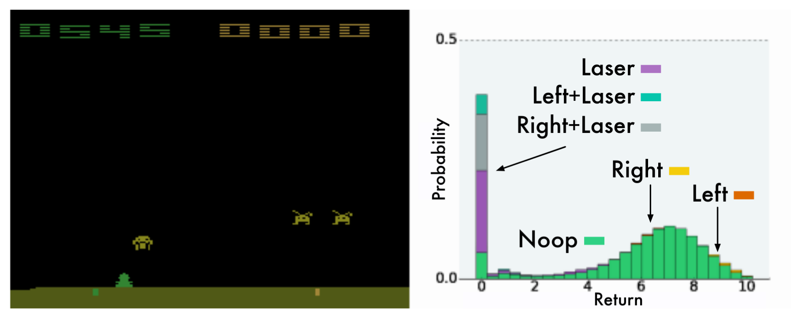
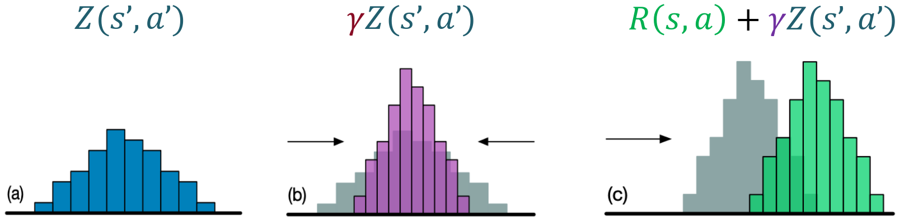
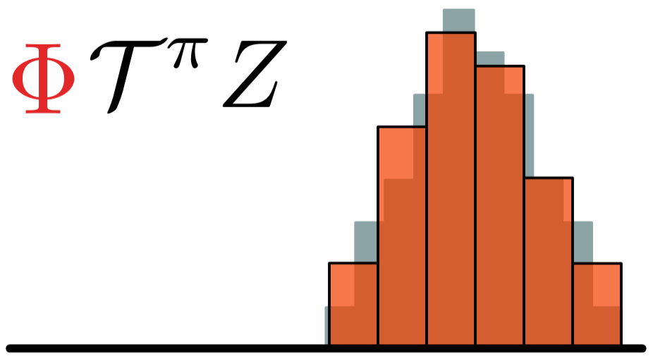
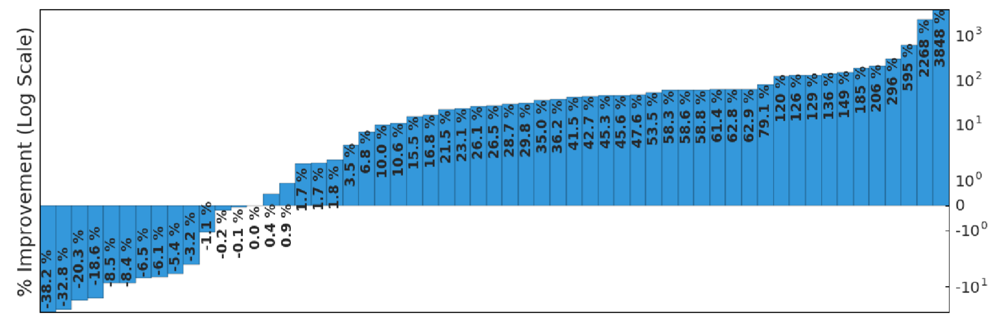
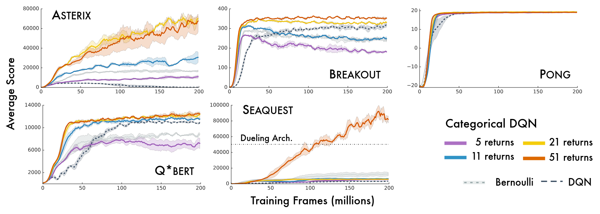
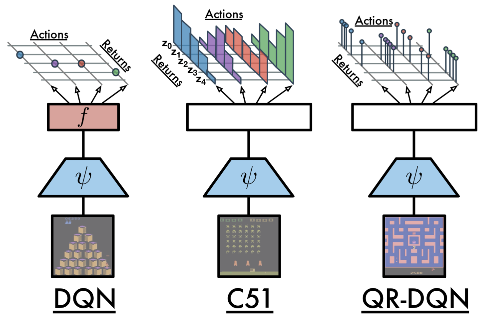
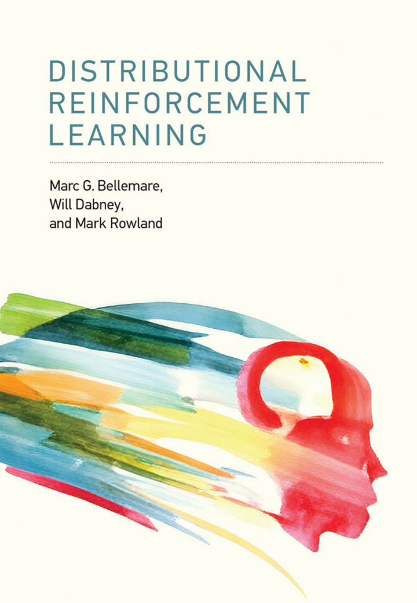

Distributional RL
October 3, 2025
Categorical DQN (C51)
Introduction & Motivation
Classic DQN:
- Learns only the expectation $Q(s,a)=\mathbb{E}[R \mid s,a]$
- Bellman: \(Q(s,a) = R(s,a) + \gamma Q(s', a')\).
- Lost information: variance, skewness, tail (risk) structure.
Distributional RL:
- Model full return random variable \(Z(s,a)\) (not just its mean).
- Distributional Bellman: \(\mathcal{T} Z(s,a) \stackrel{D}{=} R(s,a) + \gamma Z(s', a')\).
- Benefits: richer training signal, more stable gradients, enables risk-sensitive objectives.
Key idea: preserve probabilistic structure throughout the backup,
then take \(\mathbb{E}[Z]\)
only for action selection.
DQN Recap

- Goal: approximate \( Q(s,a) = \mathbb{E}\left[\sum_{t} \gamma^t r_t \mid s,a\right] \)
- Network: input is state, output is vector \( Q(s,a) \) for all actions
- Bellman backup (target): \( y = r + \gamma \max_{a'} Q(s',a') \)
- Loss: mean squared error \( (y - Q(s,a))^2 \)
- Limitation: collapses all uncertainty into a single scalar value
Distributional RL

- Random return: \( Z(s,a) \) is a random variable over \( \mathbb{R} \)
- Distributional Bellman: \( \mathcal{T} Z(s,a) \stackrel{D}{=} r + \gamma Z(S', A') \), i.e., the law is transformed
- Goal: approximate the law of \( Z(s,a) \) (not just \( \mathbb{E}[Z] \))
- Expectation recoverable: \( Q(s,a) = \mathbb{E}[Z(s,a)] \)
- C51: A Distributional Perspective on Reinforcement Learning, Bellemare et al., 2017.
Categorical Approximation (C51)

- Fixed discrete support: \( \{z_i\}_{i=0}^{N-1} \), with \( N = 51 \)
- Bounded interval: \( [V_{\min}, V_{\max}] \)
- \( \Delta z = \frac{V_{\max} - V_{\min}}{N-1} \)
- Network predicts logits \( \to \) softmax \( \to \) \( p_i(s,a) \)
- Approximate distribution: \( \mathbb{P}(Z(s,a) = z_i) = p_i \)
Distributional RL
Example of learned distribution

Distributional RL
Example of learned distribution
Distributional RL
Example of learned distribution
C51 Architecture


- Backbone identical to DQN: convolutional layers followed by fully connected layers.
- Output: $(\#\text{actions} \times N)$ logits, reshaped to $(\#\text{actions}, N)$.
- Softmax over atoms for each action: $p_i(s,a)$.
- Action selection: $a^* = \arg\max_a \sum_i p_i(s,a) z_i$.
- Target: uses frozen (target) network and projection onto fixed support.
But wait...
Why model the full value distribution if action selection is based only on the expected value?
DQN Algorithm
$\quad\quad$ none
Algorithm parameter:
$\quad\quad$ discount factor $\gamma$
$\quad\quad$ step size $\alpha \in (0,1]$
$\quad\quad$ small $\epsilon > 0$
$\quad\quad$ capacity of the experience replay memory $M$
$\quad\quad$ batch size $m$
$\quad\quad$ target network update frequency $\tau$
Initialize replay memory $\mathcal{D}$ to capacity $M$
Initialize action-value function $\hat{Q}_{\mathbf{\omega_1}}$ with random weights $\mathbf{\omega_1}$
Initialize target action-value function $\hat{Q}_{\mathbf{\omega_2}}$ with weights $\mathbf{\omega_2} = \mathbf{\omega_1}$
FOR EACH episode
$\quad$ $\mathbf{s} \leftarrow \text{env.reset}()$
$\quad$ DO
$\quad\quad$ $\mathbf{a} \leftarrow $$\epsilon\text{-greedy}(\mathbf{s}, \hat{Q}_{\mathbf{\omega_1}})$
$\quad\quad$ $r, \mathbf{s'} \leftarrow \text{env.step}(\mathbf{a})$
$\quad\quad$ Store transition $(\mathbf{s}, \mathbf{a}, r, \mathbf{s'})$ in $\mathcal{D}$
$\quad\quad$ If $\mathcal{D}$ contains "enough" transitions
$\quad\quad\quad$ Sample random batch of transitions $(\mathbf{s}_j, \mathbf{a}_j, r_j, \mathbf{s'}_j)$ from $\mathcal{D}$ with $j=1$ to $m$
$\quad\quad\quad$ For each $j$, set $y_j = \begin{cases} r_j & \text{for terminal } \mathbf{s'}_j\\ r_j + \gamma \max_{\mathbf{a}^\star} \hat{Q}_{\mathbf{\omega_{2}}} (\mathbf{s'}_j)_{\mathbf{a}^\star} & \text{for non-terminal } \mathbf{s'}_j \end{cases}$
$\quad\quad\quad$ Perform a gradient descent step on $\left( y_j - \hat{Q}_{\mathbf{\omega_1}}(\mathbf{s}_j)_{\mathbf{a}_j} \right)^2$ with respect to the weights $\mathbf{\omega_1}$
$\quad\quad\quad$ Every $\tau$ steps reset $\hat{Q}_{\mathbf{\omega_2}}$ to $\hat{Q}_{\mathbf{\omega_1}}$, i.e., set $\mathbf{\omega_2} \leftarrow \mathbf{\omega_1}$
$\quad\quad$ $\mathbf{s} \leftarrow \mathbf{s'}$
$\quad$ UNTIL $\mathbf{s}$ is final
RETURN $\mathbf{\omega_1}$
C51 Algorithm
$\quad$ $\mathbf{s} \leftarrow \text{env.reset}()$
$\quad$ DO
$\quad\quad$ $\mathbf{a} \leftarrow $$\epsilon\text{-greedy}(\mathbf{s}, \hat{Z}_{\mathbf{\omega_1}})$
$\quad\quad$ $r, \mathbf{s'} \leftarrow \text{env.step}(\mathbf{a})$
$\quad\quad$ Store transition $(\mathbf{s}, \mathbf{a}, r, \mathbf{s'})$ in $\mathcal{D}$
$\quad\quad$ IF $\mathcal{D}$ contains "enough" transitions
$\quad\quad\quad$ Sample random batch of transitions $(\mathbf{s}_j, \mathbf{a}_j, r_j, \mathbf{s'}_j)$ from $\mathcal{D}$ with $j=1$ to $m$
$\quad\quad\quad$ FOR EACH transitions $(\mathbf{s}, \mathbf{a}, r, \mathbf{s'})$ of this batch
$\quad\quad\quad\quad$ Apply the Bellman operator
$\quad\quad\quad\quad$ Compute the projection $\Phi$ of $\mathcal{T}^{\pi}Z$ onto the support $\{z_i\}$
$\quad\quad\quad\quad$ Perform a gradient descent step to minimize the cross-entropy
$\quad\quad\quad$ Every $\tau$ steps reset $\hat{Z}_{\mathbf{\omega_2}}$ to $\hat{Z}_{\mathbf{\omega_1}}$, i.e., set $\mathbf{\omega_2} \leftarrow \mathbf{\omega_1}$
$\quad\quad$ $\mathbf{s} \leftarrow \mathbf{s'}$
$\quad$ UNTIL $\mathbf{s}$ is final
RETURN $\mathbf{\omega_1}$
$$Q(s,a) = \mathbb{E}[Z(s,a)] = \sum_i z_i , p_\omega(z_i \mid s,a).$$ The value $Q$ can be obtained as the expectation of $Z$.
Behavior policy: with probability $1-\epsilon$, take the action that maximizes the expected value
according to the current distributional estimate.

Since the support of the target distribution does not necessarily fall exactly on the fixed support of the predicted distribution,
we project it using the operator $(\Phi)$.

Perform a gradient descent step to minimize the cross-entropy between
the predicted distribution and the target distribution.
$$L(\omega) = - \sum_i p_i^{\text{target}} \log p_i^{\text{pred}}$$
C51
Atari Results (Summary)

Source: A Distributional Perspective on Reinforcement Learning, Bellemare et al., 2017.
- Improved median score compared to vanilla DQN
- Faster convergence in the first millions of frames
- Reduced training variance
- Foundation for Rainbow (integration of further improvements)
C51
Atari Results (varying number of atoms)

Source: A Distributional Perspective on Reinforcement Learning, Bellemare et al., 2017.
C51
Limitations & Extensions
- Fixed support: risk of saturation if returns fall outside $[V_{\min}, V_{\max}]$
- Uniform resolution: inefficient for modeling sharp tails or skewed distributions
- Extensions:
- QR-DQN: learns quantiles, reducing projection bias
- IQN: continuous implicit quantile function for flexible modeling
- Paradigm: working with distributions enables risk-sensitive and utility-based RL
C51
Conclusion & Discussion
- Moving from expectation to distribution provides a richer learning signal.
- C51 is simple, effective, and forms the basis for many improvements.
- Actions are selected via the expectation: the full distribution is valuable for training and for future risk-sensitive objectives.
- Enables risk-sensitive RL, robustness, and informed exploration.
- Open questions: how to choose the support? How to combine with epistemic uncertainty?
Quantile Regression Deep Q-Network

- Represents the value distribution by estimating a fixed set of quantiles.
- Uses quantile regression loss to train the network.
- Improves stability and expressiveness over categorical methods.
Distributional Reinforcement Learning with Quantile Regression, Dabney et al., 2017.
Extensions
QR with Utility / Risk-sensitive RL
- Integrate utility functions into quantile-based RL
for risk-sensitive objectives. - Customize agent behavior: risk-averse, risk-seeking,
or robust policies. - Applications in finance, robotics, and safety-critical domains.
Further Reading
Bellemare, M. G., Dabney, W., & Rowland, M. (2023). Distributional Reinforcement
Learning. MIT Press.
Freely available as an open-access PDF from MIT Press.
